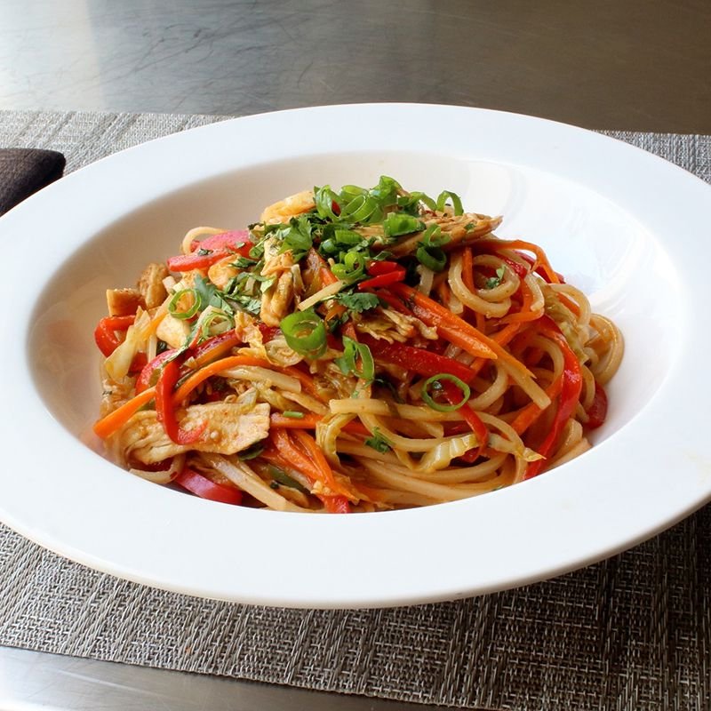

Spicy Chicken Noodles

Description
Spicy chicken noodles are a vibrant and flavorful dish that marries the tender, savory taste of chicken with the bold, fiery kick of spices, creating a delightful symphony of flavors in every bite. This dish is typically made by stir-frying slices or chunks of chicken with a generous mix of chili peppers, garlic, ginger, and sometimes Szechuan peppercorns for an extra numbing sensation, depending on the recipe's regional inspiration. The chicken is then tossed with noodles, which can range from thin egg noodles to thicker wheat or rice noodles, depending on personal preference and cultural influences. Vegetables such as bell peppers, onions, and green onions are often added to the mix, contributing freshness and crunch. The sauce, a crucial component, can vary widely but usually includes soy sauce, sesame oil, and possibly a touch of sugar to balance the heat. Spicy chicken noodles can be customized in terms of spice level and ingredients, making them a versatile dish that can cater to a wide range of palates. Whether enjoyed in a cozy home kitchen or served as a street food staple in various parts of Asia, spicy chicken noodles offer a comforting, satisfying meal that's as rich in history as it is in taste.
Ingredients
Vegetables
- 1 large carrot
- 2 cups shredded green cabbage
- 1 red bell pepper, thinly sliced
- 2 jalapeno pepper, seeded and minced
- 1/2 cup chopped green onions
- 3 cloves garlic, finely crushed
Sauce
- 1/2 cup chicken broth
- 1/4 cup seasoned rice vinegar
- 1 tablespoon hoisin sauce
- 1 tablespoon soy sauce, plus more to taste
- 1 tablespoon ketchup
- 1 tablespoon brown sugar
- 1 tablespoon sriracha hot sauce
- 1 teaspoon red pepper flakes
Noodles
- 8 ounce package dried rice noodles
- 1 pinch salt
- 8 ounces cooked chicken breast, torn into bite-size pieces
- 1 tablespoon sesame oil
- 1 tablespoon vegetable oil
- 1/2 cup freshly chopped cilantro
Steps
- Place carrots, cabbage, bell pepper, jalapeno pepper,
green onions, and garlic in a mixing bowl.
-
Mix chicken broth, rice vinegar, hoisin sauce, soy sauce, ketchup,
brown sugar, sriracha sauce, and red pepper flakes together in a separate
mixing bowl.
-
Place dry rice noodles in a large mixing bowl. Cover with about 6 cups boiling water;
add a pinch of salt. Stir from time to time until noodles are soft, about 10 minutes.
Drain; cool with cold water. Drain thoroughly. Transfer to a mixing bowl.
Add shredded chicken; drizzle with sesame oil. Toss to coat.
- Heat large skillet over high heat; drizzle in vegetable oil.
When oil is hot (almost but not quite smoking), add the vegetable mixture.
Cook and stir until vegetables are hot and steamy, 1 or 2 minutes.
Pour in sauce; cook and stir over high heat until sauce starts to bubble, about 1 minute.
Add noodles and chicken. Cook and stir to blend ingredients and ensure ingredients are hot, about 1 minute.
Remove from heat. Add chopped cilantro; stir.
Return to Recipes